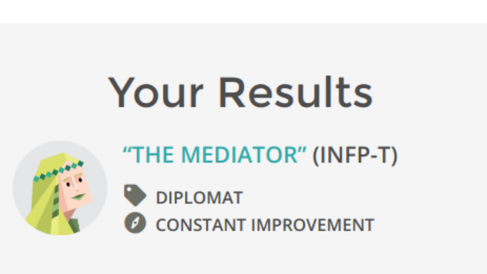

INFP-T

Mediators are guided by their principles, rather than by logic (Analysts), excitement (Explorers), or practicality (Sentinels)
Strengths
-
Idealistic
-
Seek and Value Harmony
-
Open-Minded and Flexible
-
Very Creative
-
Passionate and Energetic
-
Dedicated and Hard-Working
Weakness
-
I don't like to talk about my self
-
Too Idealistic
-
Too Altruistic
-
Impractical
-
Dislike Dealing With Data
-
Take Things Personally
-
Difficult to Get to Know
Things to know
-
I am friendly, really...
-
Prefer face to face communications so i can gauge non verbal responses such as body language
-
Fear of public speaking
-
Hard but slow worker
-
Horrible Speller
Famous people who are like me according to data, but don't know personally
-
Lance Sweets - Bones
-
J.R.R. Tolkein
-
Bjork